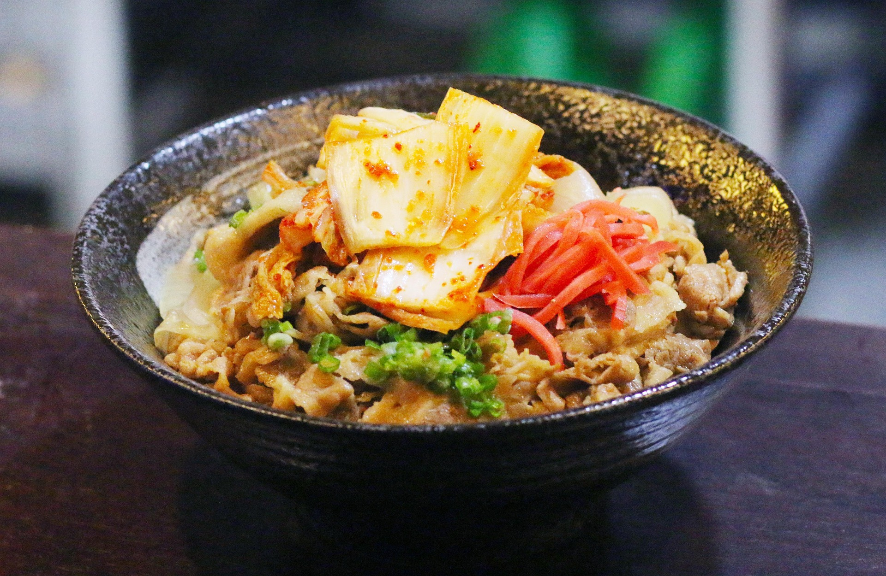

Bienvenue
Bienvenue au Resto'Mon, un restaurant inspiré de l'univers Pokémon. Venez découvrir nos plats thématiques et notre ambiance chaleureuse !
Nos spécialités
- Ramen Pikachu
- Sushi Magicarpe
- Onigiri Rondoudou
- Curry Brasegali
- AzuMochi
- EvoGlacy
Pour voir plus de nos plats et menus, rendez vous sur la page de notre carte